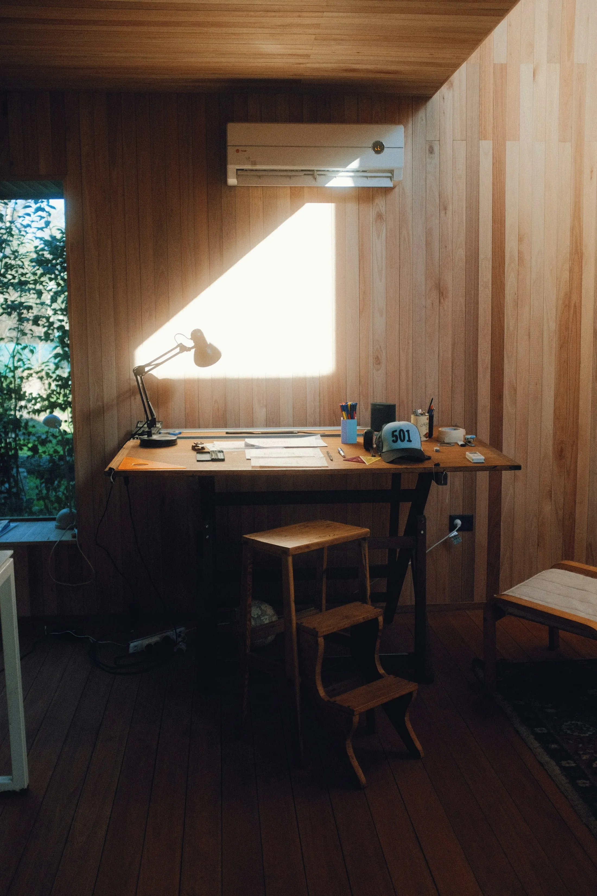

ALUNIX

SVERIGE
Er webbplats är nutidens visitkort.
TJÄNSTER
Webbdesign, design och system. Allt på ett ställe.
01
Webbdesign
Skräddarsydda webbplatser som exponerar ert företag. Nutidens visitkort, byggt för er verksamhet.
02
Design
Varumärke och grafisk form som gör att sajten ser ut som företaget bakom den.
03
System
Egna digitala lösningar, som Alunix OS och ett lagersystem, visar den tekniska höjden vi bygger på.
UTVALDA PROJEKT
Tre sajter, i drift.


FILOSOFI
Alla har rätt till bra design.
Därför lägger vi oss på en nivå som gör våra tjänster tillgängliga för fler, utan att kompromissa med resultatet. Vårt enda mått är perfektion.
Din digitala byrå, allt på ett ställe, från första skiss till levererad sajt.